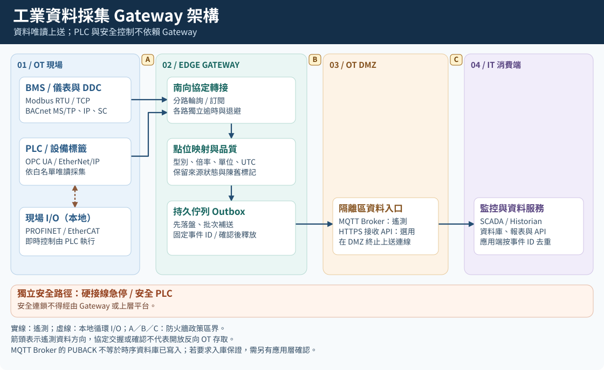

工業資料採集 Gateway 架構
把 PLC、DDC、電表與變頻器的不同資料格式，轉成帶來源、時間和品質的事件。Gateway 採集與分發，PLC／DDC 保留閉迴路控制，安全連鎖不依賴 Python、Broker 或雲端。
- 南向讀取：PLC／DDC／設備
- 邊緣處理：時間、單位、品質、持久佇列
- 北向分發：OT DMZ、MQTT／HTTPS、歷史庫
先分南向採集、現場即時 I/O 和北向分發
不是把 Modbus 串接 OPC UA 再串接 BACnet。多個南向轉接器可並列，採集同一設備時也要選定權威來源，避免重複入庫。
| 介面／角色 | 傳輸與資料形式 | 適用場景 | 驗收重點 |
|---|---|---|---|
| Modbus RTU／TCP｜南向 | RTU 常用 RS-485；TCP 用 MBAP。Coil、register、功能碼和偏移位址。 | 電表、VFD、舊式 PLC。 | RTU 掃描時間、偏移、倍率及多字順序。 |
| BACnet MS/TP／IP／SC｜南向 | RS-485 權杖、UDP/IP、或 TLS WebSocket；物件及屬性。 | BMS、AHU、冰水廠、DDC。 | Device Instance、物件屬性、COV 支援、續訂與回讀。 |
| OPC UA｜通常南向，也可對外提供模型 | 節點、命名空間、DataValue、型別、狀態及時間；Read 或訂閱。 | PLC／SCADA／MES，須保留品質或語意。 | 信任與權限、Namespace URI、伺服器修訂的採樣／發布週期。 |
| EtherNet/IP｜南向只讀 | CIP Explicit 介面讀物件或設備支援的標籤；Implicit 是循環 I/O。 | 支援 CIP 的 PLC 或設備。 | 標籤型別、批量讀取支援、負載上限；不取代 Scanner。 |
| PROFINET／EtherCAT｜現場控制 | 循環 I/O；設備結構由 GSDML／ESI 等工程描述配合控制器。 | 遠端 I/O、變頻、運動控制。 | 由 PLC／控制器對時和執行；Gateway 讀 PLC 轉出的點位。 |
| MQTT 5／HTTPS｜北向 | Topic 加 payload 或 HTTP 路由加結構化請求；兩者須自訂業務資料契約。 | Historian、跨區分發、資料平台與批次回填。 | 明訂 ACK 的成功邊界、重複事件去重、期限與恢復吞吐量。 |
Gateway 先解決資料流與責任邊界
不要從 library 開始選型，先確定現場點位、資料品質、告警與維運邊界。

箭頭表示觀測資料的方向；輪詢協定實際上仍由 Gateway 主動送出讀取請求。控制器的原生循環 I/O 與安全鏈和這條遙測路徑分開。
下載可編輯架構圖（draw.io）- 設備層：PLC／DDC 維持 PID、設備保護與本地告警；安全功能由經設計驗證的獨立路徑負責。
- 資料轉接：各協定有獨立輪詢／訂閱預算。串列區段共享一條總線，單一慢站不能拖垮其他區段。
- 正規化：依有版本的點表確認型別、單位、品質和時間，無效資料不能悄悄轉成 0。
- 持久佇列：交易內存放資料與穩定事件 ID；只有達到選定的確認邊界才釋放。磁碟滿要告警，不得無聲覆寫。
- OT DMZ／北向：只開必要來源與目的地；向 Broker 或 HTTPS 匯入服務送資料，不讓 IT 網段直接操作 PLC。
點位表是工業軟體的契約
IO map 必須包含 register、datatype、unit、alarm、fail-safe 與上層資料名稱。
點位表示和事件格式
固定 point_id，把來源定位與工程含義分開。至少記錄裝置、協定定位、原始型別、符號／位元序、倍率、工程單位、有效範圍、更新策略、最大資料年齡與點表版本。改倍率或單位應留版本、遷移方式和測試向量。
{
"schema_version": 1, "point_map_version": "2026-11",
"event_id": "gw-a-000051", "point_id": "ahu-01.supply_air_temperature",
"value": 24.3, "unit": "Cel", "quality": "GOOD",
"source_protocol": "modbus_tcp", "source_ts": null,
"observed_at": "2026-11-26T03:00:00Z", "time_origin": "gateway"
}三種時間不能混寫：source_ts 是設備有效時間（無則留空）；observed_at 是 Gateway 觀測時間；入庫時間由消費端產生。離線補送不刷新已儲存的事件時間或 ID。陳舊判斷用採集新鮮度及時鐘品質，不能單用 OPC UA 的「最後變更時間」判定穩定點位壞掉。
品質不是數值：GOOD 表示成功、合約與品質檢查通過；STALE 是已超過新鮮度預算；BAD 表示解析或來源失敗；UNCERTAIN 則保留可疑狀態。保留上次有效值時應另存並標示其年齡，不在同一欄假裝即時值。秒級告警與控制超時各有責任人。
Modbus 要明確標註 function code 與 endian
40001 Holding Register、FC03、FC16、word order 與 timeout 是現場常見錯誤來源。
RTU 和 TCP 的封裝不同，PDU 的功能碼相同
- RTU：裝置位址＋PDU＋CRC；現場常見兩線 RS-485，總線拓樸、末端終端和鮑率／同位元須一致。同一半雙工區段由單一採集發起端序列化請求。
- TCP：MBAP 的 Transaction ID、Protocol ID、Length、Unit ID ＋ PDU；TCP 不帶 RTU CRC。TCP 串流到貨邊界不等於訊框邊界，使用支援完整封裝的 client；RTU 橋接器上的 Unit ID 對應下游站號，直連設備則查原廠。
- 只讀試算：若點表規定 Holding Register 標籤 40001 對應線上位址 0，以 FC03 讀；Input Register 則用 FC04。用設備手冊核對，不要把畫面上的 40001 原封不動當線上位址。原始
0x00F3（243）乘 0.1 得 24.3 °C；點表若是 signed int16，0xFF9C＝−100，再乘 0.1 得 −10.0 °C。 - 多字資料：一個暫存器兩個 byte 的傳輸順序和多暫存器的 word order 是兩件事；浮點格式與高低 word 依設備點表，以兩組已知正／負值驗證。不要跨設備假定字序。
容量用線上傳輸＋站間空檔＋設備回應＋重試估。合成例：20 站、一次成功讀取含空檔平均 40 ms，一輪約 0.80 s；若一站首、次嘗試各佔 300 ms，一輪至少 19×40＋2×300＝1,360 ms，還沒加入 backoff。因此「1 秒全掃」要按實測與失效情境驗收。TCP 轉 RTU 並不讓同一總線同時處理多筆。
OPC UA 以 NodeId 與 subscription 建資料模型
endpoint、namespace、Security Mode、publish interval、keepalive 與 reconnect 要成為設定。
訂閱是採樣、佇列與發送三件事
用 Namespace URI＋identifier 保存點位，建立 session 後解析當前 NamespaceArray，再取得例如 ns=2;s=AHU1.SupplyTemperature；數字索引只對當前伺服器命名空間表有效。取 DataValue 的 Value、StatusCode、SourceTimestamp，若有則另保存 ServerTimestamp。Bad 狀態的值不可視為有效。
例：要求每 250 ms 採樣、每 1,000 ms 發布，不表示端到端延遲保證為 1 秒。檢查伺服器實際修訂的 sampling interval、publishing interval、queue size、discard policy 及過濾死區。斷線重連先檢查 session／subscription 是否可恢復；緩衝覆寫或序號缺口要告警，無法補齊時讀目前值做重新同步，不冒稱歷史資料已還原。
現場使用受信的應用憑證、合適的安全政策及 SignAndEncrypt，再依身分授予唯讀權限；憑證汰換、時間校正與拒絕未知憑證都列入驗收。OPC Foundation：監控項目服務 · 通知狀態與溢位
BACnet 需保留 object 與 routing 語意
object type、object instance、BBMD、foreign device 與跨網段 routing 必須寫入設計。
同是 BACnet 物件，現場網路不同
- MS/TP：RS-485 權杖匯流排。記錄 MAC、鮑率、裝置實例與路由網路號；多個主站與權杖週期影響延遲。它不是 Modbus RTU，不能共用其點位或幀解析。
- BACnet/IP：常用於 DDC、BMS，基於 UDP/IP。已知地址的單播讀取和跨子網的廣播探索分開設計；需要傳遞廣播時才規劃 BBMD／Foreign Device 與續租，不是每個跨網讀取都需要 BBMD。
- BACnet/SC：TLS WebSocket、Hub 與信任憑證；跨回傳統 BACnet/IP 或 MS/TP 後，保護依該段能力，不能宣告全路徑端到端加密。
點位識別例：Device 12001 → analog-input:17 → present-value。同步保留 Units、Status_Flags、Reliability（裝置提供時）；具相容性證據才使用 ReadPropertyMultiple。支援 COV 可減少讀取，但要續訂、重連重訂與低頻健康回讀；不支援／失敗就回到有節流的輪詢。值沒變時沒有新的 COV 通知，不代表設備失聯。
EtherNet/IP、PROFINET 與 EtherCAT：讀控制器，不搶控制權
- EtherNet/IP：採集用設備明確支援的 CIP Explicit 讀取服務（物件或標籤依裝置），限制批次與連線。循環 Implicit I/O 常以 UDP 傳輸，配置週期和控制連線由 PLC／Scanner 管理；不要把兩類流量當成同一條輪詢。
- PROFINET IO：控制器依裝置配置交換週期 I/O；工程資料例如 GSDML 描述 I/O 模組及診斷。Python 讀 PLC 暴露的 OPC UA、Modbus TCP 或經核准的資料介面，不承擔 RT／IRT 或安全功能。
- EtherCAT：由 MainDevice 管理週期資料，Distributed Clocks 用於同步；ESI 描述設備，PDO 是週期資料。從 PLC 的已映射工程量取值；不直接把裝置的 PDO 週期當作 Gateway 的資料更新承諾。
MQTT topic 與 payload 是上雲契約
topic naming、QoS、retain、store-and-forward 與 payload schema 會影響 SCADA/雲端整合。
MQTT 與 HTTPS 的成功邊界不同
如果資料會給 HMI 或瀏覽器使用，見 RESTful API／WebSocket 工業應用：快照、歷史、增量及游標補送。
- MQTT 5：例如 Topic
ot/site-a/ahu-01/telemetry，業務欄位放 JSON payload。QoS 0 可能遺失；QoS 1 可能重複；QoS 2 的一次交付語意在協定交換範圍內，不保證資料庫或告警流程只執行一次。MQTT QoS 1 收到 PUBACK 只代表達到 Broker 的確認邊界，不是 Historian 入庫回執。需驗證 reason code 和長期保存策略。 - Retain／Session／Expiry：Retain 是每個 topic 的最後保留訊息，不是歷史；Session Expiry 是連線會話保留時間；Message Expiry 管訊息期限，不能替代事件的原始時間。即時畫面驗證 age 與 quality；歷史補送要保留原事件且區分來源序號。
- HTTPS 批次：例如
POST /v1/telemetry/batches；使用 TLS、身分與內容驗證，伺服器按event_id去重。202是已接受處理，不代表已寫入資料庫；若需確認入庫，以應用層回執或查詢狀態為準。只對可安全重送的請求使用有期限的退避與抖動，不能每次重送產生新事件 ID。
Broker 與 API 存取分開授權，限制 topic 或路由唯有必要權限。架構圖不含任意北向下行寫設備；如果另做控制服務，必須獨立評估，不與遙測共用權限。
現場部署要把失效情境寫清楚
timeout、retry、stale、alarm、fail-safe、VLAN、firewall 與維護流程都需要可驗證。
採集、斷線、補送：每一步都有可驗收結果
- 排程：按區段控制並發；記錄每站成功率、掃描 p95 與慢站逾時。
- 解碼與檢查：點表轉換、品質與時間；資料不合法時送品質事件，不補 0。
- 原子入列：事件與 ID 同一筆本機交易；只刪除已達契約確認點的事件，重啟能從未確認位置續送。
- 離線：資料採集不等網路；有界磁碟與期限，滿載先觸發告警並執行規定的取捨，告警和一般遙測可用不同容量政策。
- 恢復：有界節奏補送，消費端去重並區分補送與即時；以最舊未送事件年齡和追趕實測判定恢復。
緩衝試算：200 個點、每 5 秒各取一筆＝40 筆/s。離線 8 小時約 1,152,000 筆；每筆實測 300 bytes 時資料本體約 346 MB（十進位），還要加索引、WAL、檔案系統及餘裕。若重連後確認能力 100 筆/s、同時新增 40 筆/s，理論追趕約 1,152,000÷60＝5.33 h；必須在尖峰和低儲存量條件實測。
驗收情境：拔除單站的模擬連線，其餘站照常；模擬北向離線與重新啟動，資料年齡及優先政策可追溯；重送同一 ID 不重複入庫；模擬憑證過期、時鐘飄移與磁碟滿時不悄悄報 GOOD。任何測試應先在隔離環境；正式消防、急停等驗收由現場安全流程管理。
Industrial Data Gateway 範例專案
`範例程式碼/industrial_data_gateway/` 示範 Modbus register 模擬、alarm、fail-safe 與 protocol payload contract。 範例原始碼與執行說明。
cd 範例程式碼/industrial_data_gateway
python3 -m py_compile src/industrial_data_gateway/*.py scripts/run_gateway_smoke.py
PYTHONPATH=src python3 -m unittest discover -s tests -v
python3 scripts/run_gateway_smoke.py範例程式碼 · 工業資料閘道
從模擬暫存器讀取溫度，比對同一讀值如何產生 BACnet／OPC UA 識別資訊與 MQTT payload。全程離線，不實作線上通訊、持久佇列或實體安全邏輯；狀態輸出僅供示範。
從筆記根目錄執行（macOS／Linux）
cd 範例程式碼/industrial_data_gateway
PYTHONPATH=src python3 scripts/run_gateway_smoke.pyscripts/run_gateway_smoke.py
from __future__ import annotations
import json
from pathlib import Path
import sys
ROOT = Path(__file__).resolve().parents[1]
sys.path.insert(0, str(ROOT / "src"))
from industrial_data_gateway.gateway import IndustrialGateway, MockModbusDevice, default_points, encode_float32_words
def main() -> int:
high, low = encode_float32_words(42.5, word_order="big")
device = MockModbusDevice({1: high, 2: low, 11: 1})
gateway = IndustrialGateway(default_points(), device, timeout_seconds=2.0)
readings, alarms = gateway.poll_once()
report = gateway.build_gateway_report(readings, alarms)
assert len(readings) == 2
assert report["opcua"]["endpoint_url"] == "opc.tcp://192.168.10.20:4840"
assert report["opcua"]["security_mode"] == "None"
assert report["bacnet"]["bbmd"] == "192.168.10.2"
assert report["mqtt"][0]["qos"] == 1
assert not report["fail_safe_active"]
print("industrial gateway smoke passed: modbus + opcua + bacnet + mqtt + alarms")
print(json.dumps({"readings": len(readings), "alarms": len(alarms)}, sort_keys=True))
return 0
if __name__ == "__main__":
raise SystemExit(main())
src/industrial_data_gateway/cli.py
from __future__ import annotations
import json
from .gateway import IndustrialGateway, MockModbusDevice, default_points, encode_float32_words
def main() -> int:
high, low = encode_float32_words(42.5, word_order="big")
device = MockModbusDevice({1: high, 2: low, 11: 1})
gateway = IndustrialGateway(default_points(), device)
readings, alarms = gateway.poll_once()
print(json.dumps(gateway.build_gateway_report(readings, alarms), indent=2, sort_keys=True))
return 0
if __name__ == "__main__":
raise SystemExit(main())
src/industrial_data_gateway/gateway.py
from __future__ import annotations
import json
import math
import struct
from dataclasses import dataclass
from time import monotonic
from typing import Iterable, Mapping
class GatewayError(RuntimeError):
"""Raised when the gateway cannot produce a safe reading."""
@dataclass(frozen=True)
class GatewayPoint:
point_id: str
description: str
modbus_register: int
function_code: int
register_type: str
data_type: str
word_order: str
scale: float
unit: str
low_alarm: float | None
high_alarm: float | None
fail_safe_value: float | int | bool
opcua_node_id: str
bacnet_object_type: str
bacnet_object_instance: int
mqtt_topic: str
@dataclass(frozen=True)
class PointReading:
point_id: str
value: float | int | bool
unit: str
quality: str
age_seconds: float
@dataclass(frozen=True)
class AlarmEvent:
point_id: str
severity: str
message: str
value: float | int | bool
def decode_float32_words(high_word: int, low_word: int, word_order: str = "big") -> float:
if not 0 <= high_word <= 0xFFFF or not 0 <= low_word <= 0xFFFF:
raise GatewayError("Modbus words must be 16-bit unsigned values")
words = (high_word, low_word) if word_order == "big" else (low_word, high_word)
raw = struct.pack(">HH", *words)
return struct.unpack(">f", raw)[0]
def encode_float32_words(value: float, word_order: str = "big") -> tuple[int, int]:
raw = struct.pack(">f", float(value))
high_word, low_word = struct.unpack(">HH", raw)
return (high_word, low_word) if word_order == "big" else (low_word, high_word)
class MockModbusDevice:
def __init__(self, registers: Mapping[int, int], response_delay_seconds: float = 0.0) -> None:
self._registers = dict(registers)
self.response_delay_seconds = response_delay_seconds
def read_holding_registers(self, start_register: int, count: int, timeout_seconds: float) -> list[int]:
if self.response_delay_seconds > timeout_seconds:
raise TimeoutError(f"Modbus read timeout after {timeout_seconds:.1f}s")
values: list[int] = []
for offset in range(count):
register = start_register + offset
if register not in self._registers:
raise GatewayError(f"Missing holding register 4{register:04d}")
values.append(self._registers[register])
return values
class IndustrialGateway:
def __init__(self, points: Iterable[GatewayPoint], device: MockModbusDevice, timeout_seconds: float = 2.0, stale_seconds: float = 15.0) -> None:
self.points = list(points)
self.device = device
self.timeout_seconds = timeout_seconds
self.stale_seconds = stale_seconds
def poll_once(self) -> tuple[list[PointReading], list[AlarmEvent]]:
readings: list[PointReading] = []
alarms: list[AlarmEvent] = []
started = monotonic()
for point in self.points:
try:
reading = self._read_point(point, started)
except (GatewayError, TimeoutError) as exc:
reading = PointReading(
point_id=point.point_id,
value=point.fail_safe_value,
unit=point.unit,
quality="FAIL_SAFE",
age_seconds=self.stale_seconds,
)
alarms.append(AlarmEvent(point.point_id, "critical", str(exc), point.fail_safe_value))
else:
alarms.extend(self._evaluate_alarm(point, reading))
readings.append(reading)
return readings, alarms
def _read_point(self, point: GatewayPoint, started: float) -> PointReading:
if point.function_code != 3 or point.register_type != "holding":
raise GatewayError("sample supports FC03 holding register reads")
count = 2 if point.data_type == "float32" else 1
words = self.device.read_holding_registers(point.modbus_register, count, self.timeout_seconds)
value: float | int | bool
if point.data_type == "float32":
value = decode_float32_words(words[0], words[1], point.word_order) * point.scale
if math.isnan(value) or math.isinf(value):
raise GatewayError("invalid float reading")
elif point.data_type == "bool":
value = bool(words[0])
else:
value = int(words[0] * point.scale)
age = monotonic() - started
quality = "STALE" if age > self.stale_seconds else "GOOD"
return PointReading(point.point_id, value, point.unit, quality, age)
def _evaluate_alarm(self, point: GatewayPoint, reading: PointReading) -> list[AlarmEvent]:
if reading.quality != "GOOD":
return [AlarmEvent(point.point_id, "warning", f"{point.point_id} quality is {reading.quality}", reading.value)]
if isinstance(reading.value, bool):
return []
alarms: list[AlarmEvent] = []
if point.low_alarm is not None and reading.value < point.low_alarm:
alarms.append(AlarmEvent(point.point_id, "warning", f"{point.point_id} below low alarm", reading.value))
if point.high_alarm is not None and reading.value > point.high_alarm:
alarms.append(AlarmEvent(point.point_id, "critical", f"{point.point_id} above high alarm", reading.value))
return alarms
def build_gateway_report(self, readings: list[PointReading], alarms: list[AlarmEvent]) -> dict[str, object]:
point_by_id = {point.point_id: point for point in self.points}
return {
"site": "TW-Plant-01",
"polling": {"interval_seconds": 5.0, "timeout_seconds": self.timeout_seconds, "retry": 2},
"opcua": {
"endpoint_url": "opc.tcp://192.168.10.20:4840",
"security_mode": "None",
"subscription_publish_seconds": 1.0,
"keepalive_seconds": 10.0,
"reconnect_backoff_seconds": [1, 5, 15],
"nodes": [
{"node_id": point_by_id[item.point_id].opcua_node_id, "value": item.value, "quality": item.quality}
for item in readings
],
},
"bacnet": {
"network": "BACnet/IP",
"bbmd": "192.168.10.2",
"foreign_device_ttl_seconds": 60,
"routing": "site VLAN 20 to SCADA VLAN 30 through industrial firewall",
"objects": [
{
"object_type": point_by_id[item.point_id].bacnet_object_type,
"object_instance": point_by_id[item.point_id].bacnet_object_instance,
"present_value": item.value,
}
for item in readings
],
},
"mqtt": [
{
"topic": point_by_id[item.point_id].mqtt_topic,
"qos": 1,
"payload": json.dumps({"value": item.value, "unit": item.unit, "quality": item.quality}, sort_keys=True),
}
for item in readings
],
"alarms": [alarm.__dict__ for alarm in alarms],
"fail_safe_active": any(item.quality == "FAIL_SAFE" for item in readings),
}
def default_points() -> list[GatewayPoint]:
return [
GatewayPoint(
point_id="boiler_supply_temp",
description="Boiler supply water temperature",
modbus_register=1,
function_code=3,
register_type="holding",
data_type="float32",
word_order="big",
scale=1.0,
unit="degC",
low_alarm=5.0,
high_alarm=80.0,
fail_safe_value=0.0,
opcua_node_id="ns=2;s=Boiler.SupplyTemperature",
bacnet_object_type="analog-input",
bacnet_object_instance=1,
mqtt_topic="plant/tw01/boiler/supply_temperature",
),
GatewayPoint(
point_id="pump_run_feedback",
description="Primary pump run feedback",
modbus_register=11,
function_code=3,
register_type="holding",
data_type="bool",
word_order="n/a",
scale=1.0,
unit="state",
low_alarm=None,
high_alarm=None,
fail_safe_value=False,
opcua_node_id="ns=2;s=Pump.RunFeedback",
bacnet_object_type="binary-input",
bacnet_object_instance=2,
mqtt_topic="plant/tw01/pump/run_feedback",
),
]
src/industrial_data_gateway/__init__.py
from .gateway import (
AlarmEvent,
GatewayPoint,
IndustrialGateway,
MockModbusDevice,
PointReading,
decode_float32_words,
)
__all__ = [
"AlarmEvent",
"GatewayPoint",
"IndustrialGateway",
"MockModbusDevice",
"PointReading",
"decode_float32_words",
]
__version__ = "0.1.0"
tests/test_gateway.py
from __future__ import annotations
import json
import unittest
from industrial_data_gateway.gateway import (
IndustrialGateway,
MockModbusDevice,
decode_float32_words,
default_points,
encode_float32_words,
)
class IndustrialGatewayTests(unittest.TestCase):
def test_float32_big_word_order_conversion(self) -> None:
high, low = encode_float32_words(42.5, word_order="big")
self.assertAlmostEqual(decode_float32_words(high, low, word_order="big"), 42.5)
def test_poll_once_builds_good_readings(self) -> None:
high, low = encode_float32_words(42.5)
gateway = IndustrialGateway(default_points(), MockModbusDevice({1: high, 2: low, 11: 1}))
readings, alarms = gateway.poll_once()
self.assertEqual([item.quality for item in readings], ["GOOD", "GOOD"])
self.assertEqual(alarms, [])
def test_high_alarm_is_reported(self) -> None:
high, low = encode_float32_words(91.2)
gateway = IndustrialGateway(default_points(), MockModbusDevice({1: high, 2: low, 11: 1}))
_readings, alarms = gateway.poll_once()
self.assertEqual(len(alarms), 1)
self.assertEqual(alarms[0].severity, "critical")
def test_timeout_uses_fail_safe_value(self) -> None:
high, low = encode_float32_words(42.5)
gateway = IndustrialGateway(default_points(), MockModbusDevice({1: high, 2: low, 11: 1}, response_delay_seconds=10.0), timeout_seconds=1.0)
readings, alarms = gateway.poll_once()
self.assertTrue(all(item.quality == "FAIL_SAFE" for item in readings))
self.assertTrue(all(alarm.severity == "critical" for alarm in alarms))
def test_gateway_report_contains_protocol_contracts(self) -> None:
high, low = encode_float32_words(42.5)
gateway = IndustrialGateway(default_points(), MockModbusDevice({1: high, 2: low, 11: 1}))
readings, alarms = gateway.poll_once()
report = gateway.build_gateway_report(readings, alarms)
self.assertEqual(report["opcua"]["security_mode"], "None")
self.assertEqual(report["opcua"]["nodes"][0]["node_id"], "ns=2;s=Boiler.SupplyTemperature")
self.assertEqual(report["bacnet"]["objects"][0]["object_type"], "analog-input")
mqtt_payload = json.loads(report["mqtt"][0]["payload"])
self.assertEqual(mqtt_payload["unit"], "degC")
if __name__ == "__main__":
unittest.main()